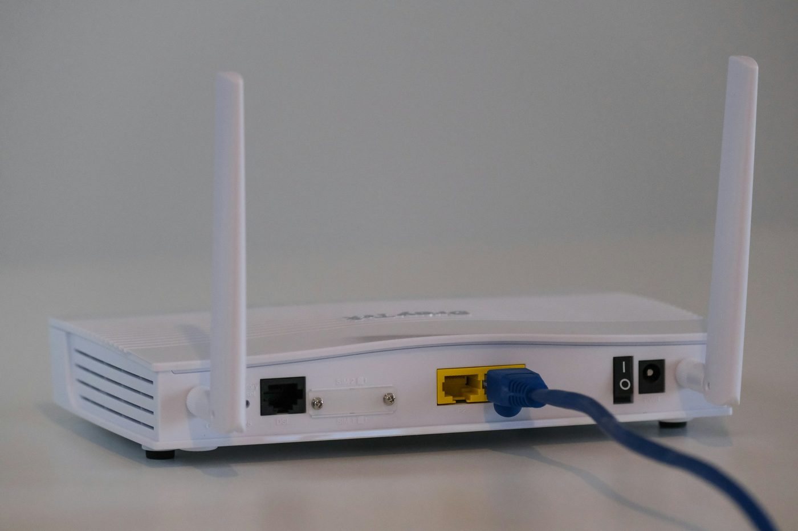

Few things are more frustrating than paying for high-speed internet and still experiencing slow Wi-Fi throughout your home.
Maybe your internet works perfectly in the living room but struggles in the upstairs bedroom. Perhaps your video calls disconnect in your home office, or your smart TV constantly buffers.
These problems are common, especially in larger homes and properties with multiple floors.
The good news is that many Wi-Fi problems can be improved with professional wireless network design.
At Wired Up Solutions, we specialize in whole-home Wi-Fi installation, wireless access points, mesh networking, and residential network upgrades throughout Denver, Colorado.
Our goal is to provide dependable wireless connectivity where you need it most.
1. What Causes Wi-Fi Dead Zones?
A Wi-Fi dead zone is an area where your wireless signal is too weak or unreliable to provide usable connectivity.
Several factors can contribute to poor coverage.
Distance from Your Router
Wireless signals generally weaken as the distance from the access point increases.
A router located at one end of a large home may struggle to cover rooms at the opposite end.
Walls and Building Materials
Concrete, masonry, metal, and certain insulation materials can weaken wireless signals.
Multiple walls and floors can also reduce coverage.
Poor Router Placement
Routers installed in basements, utility closets, cabinets, or behind large objects may have difficulty providing effective coverage.
Wireless Interference
Neighboring wireless networks and other radio-frequency sources can affect performance.
Too Many Connected Devices
Modern homes may contain dozens of wireless devices.
When many devices compete for available wireless capacity, performance can decline.
Outdated Equipment
Older wireless equipment may lack the capacity, features, or supported standards needed for today's connected households.
2. Why a More Expensive Router Might Not Solve Your Wi-Fi Problems
Many homeowners attempt to fix weak Wi-Fi by purchasing a more expensive router.
While better equipment can help, a single router still faces physical coverage limitations.
Wireless signals must travel through walls, floors, and other obstructions.
Increasing transmit power does not necessarily solve the problem because client devices also need to communicate back to the router.
For larger homes, the solution may involve multiple wireless access points rather than one centrally located device.

3. What Is Whole-Home Wi-Fi?
Whole-home Wi-Fi uses multiple strategically positioned wireless devices to provide coverage throughout a property.
Depending on the home, a system may include:
- A network router or gateway
- Multiple wireless access points
- Ethernet-connected access points
- Mesh Wi-Fi nodes
- Network switches
- Centralized management software
The system should be designed around the property's layout, construction, and connectivity requirements.
A professionally designed network considers both coverage and capacity.
4. The Benefits of Professional Wireless Access Points
Wireless access points are devices that provide Wi-Fi connectivity to nearby devices.
In a professionally designed network, multiple access points can be positioned to serve different areas of the home.
Improved Coverage
Strategic placement helps extend Wi-Fi coverage into rooms and floors that a single router may not adequately reach.
Better Capacity
Multiple access points can distribute wireless devices across different coverage areas.
Reliable Backhaul
When connected through Ethernet, access points can communicate with the network without relying on wireless backhaul.
Centralized Management
Compatible systems allow administrators to manage wireless settings, connected devices, firmware updates, and network performance from one interface.
Flexible Expansion
Additional access points can be installed as coverage requirements change.
5. Mesh Wi-Fi: An Alternative for Existing Homes
Mesh Wi-Fi systems use multiple compatible nodes to expand wireless coverage.
They can be useful in existing homes where installing Ethernet cables is difficult.
Advantages of Mesh Wi-Fi
- Flexible installation
- Potentially lower installation complexity
- Expanded wireless coverage
- Convenient management through compatible applications
Important Considerations
Mesh systems that use wireless backhaul depend on signal quality between nodes.
Poor node placement, interference, and multiple wireless hops can reduce performance.
Some mesh systems support Ethernet backhaul, which can improve connection consistency.
The best solution depends on your property and network requirements.
6. How Many Wireless Access Points Does Your Home Need?
There is no universal formula based solely on square footage.
The number of access points depends on:
- Home size
- Number of floors
- Floor plan
- Building materials
- Wireless interference
- Number of connected devices
- Desired performance
- Outdoor coverage requirements
A large open floor plan may require fewer access points than a smaller property with dense walls and separated rooms.
Professional wireless planning helps determine the appropriate equipment and placement.
7. Improving Wi-Fi for Home Offices
Remote work places additional demands on residential wireless networks.
Video conferencing, cloud applications, large file transfers, and online collaboration all depend on reliable connectivity.
A home office may benefit from:
- A dedicated Ethernet connection
- A nearby wireless access point
- Appropriate wireless coverage
- Secure network configuration
- Reliable network equipment
For stationary workstations, Ethernet is often the preferred connection when available.
8. Whole-Home Wi-Fi for Smart Home Technology
Modern smart homes depend on reliable connectivity.
Connected devices may include:
- Smart TVs
- Streaming devices
- Security cameras
- Video doorbells
- Smart thermostats
- Smart lighting
- Wireless speakers
- Home automation systems
- Smart locks
Some devices use Wi-Fi, while others use different communication technologies or dedicated hubs.
A well-designed home network helps support the Wi-Fi-dependent components of these systems.
9. Can You Extend Wi-Fi to Your Backyard or Patio?
Yes. Outdoor wireless coverage can be incorporated into a residential networking design.
Potential applications include:
- Covered patios
- Outdoor entertainment areas
- Detached structures
- Backyard workspaces
- Outdoor smart devices
Weather-rated wireless access points may be appropriate for exterior installations.
Placement, power, cable routing, and environmental conditions must be considered.
10. Home Wi-Fi Security: An Essential Part of Network Design
Reliable wireless coverage should be paired with appropriate security settings.
Strong Wireless Encryption
Use WPA3 where supported or properly configured WPA2 for compatible devices.
Guest Networks
Provide visitors with internet access without automatically exposing your primary network.
Firmware Management
Keep networking equipment updated with appropriate security and stability releases.
Secure Administrative Access
Use strong passwords and multifactor authentication where supported.
Network Segmentation
Where supported, separate certain connected devices from computers and other sensitive equipment.
Wired Up Solutions helps homeowners configure networks that balance convenience, performance, and security.
11. How Much Does Whole-Home Wi-Fi Installation Cost in Denver?
Pricing depends on several factors:
- Home size and construction
- Number of access points
- Equipment selection
- Ethernet installation requirements
- Outdoor coverage
- Existing network infrastructure
- Configuration and testing
- Network management features
A small Wi-Fi upgrade may require only a few equipment changes.
A larger home may benefit from a comprehensive network redesign with multiple access points and wired backhaul.
A professional assessment can identify the most appropriate approach.
12. Frequently Asked Questions
Why Is My Wi-Fi Slow Even with Fast Internet?
Wireless interference, weak signals, outdated equipment, or poor access point placement can reduce Wi-Fi performance.
Will a Wi-Fi Extender Fix Dead Zones?
A wireless extender may improve coverage, but its performance depends on the quality of the connection to the main network.
Is Mesh Wi-Fi Better for Large Homes?
Mesh Wi-Fi can work well in large homes, but hardwired access points are often preferred when Ethernet cabling is available.
Can Wi-Fi Cover Multiple Floors?
Yes. Multiple properly positioned access points can provide coverage across different floors.
Do I Need New Ethernet Wiring for Better Wi-Fi?
Not always. Some homes can benefit from mesh networking or equipment repositioning. Others may benefit from new Ethernet-connected access points.
Professional Whole-Home Wi-Fi Installation in Denver, Colorado
Your Wi-Fi should support your lifestyle, not create daily frustrations.
At Wired Up Solutions, we design and install residential wireless networks built around your home's unique layout and connectivity needs.
Our services include whole-home Wi-Fi design, wireless access points, mesh Wi-Fi systems, network upgrades, Wi-Fi troubleshooting, and network security configuration.
We serve homeowners throughout Denver, Cherry Creek, Lakewood, Golden, Arvada, Littleton, and surrounding Colorado communities.
Wired Up Solutions – Smart, Made Simple.